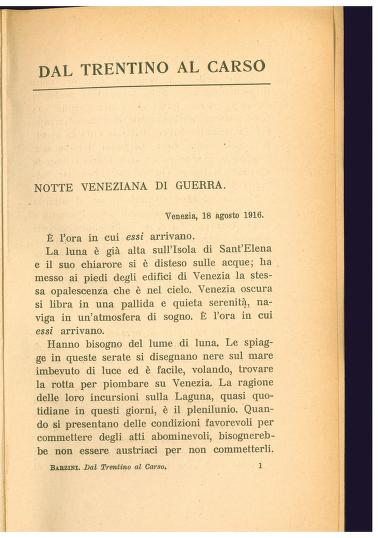

'15-'18. L'Italia e la Grande Guerra
Opzioni
Home
(current)
Cronologia
Galleria
Mappa
Items
Personaggi
|
Bibliografia
Filmografia
Search
Dal Trentino al Carso

La guerra d'Italia. Dal Trentino al Carso (agosto-novembre 1916)
Autore:
Luigi Barzini (
VIAF
)
Anno:
1917
Tipo di oggetto:
Monografia
Fornito da:
Internet Archive (
Visualizza
)
Istituzione fornitrice:
Biblioteca Comunale di Trento (
Visualizza
) (
Collezioni su
Internet Archive
)
Lingua:
Italiano
Usage:
Public Domain Mark 1.0